Autonomous Sailboat
A model sailboat that sails itself to a GPS waypoint. An Arduino reads its position, compass heading and the wind, works out where the target is and how the wind meets the boat, and steers the rudder and trims the sail in a closed loop. A radio-control override keeps a human in charge whenever needed, and every loop is logged to an SD card. I tested it first on dry land, then on real water.
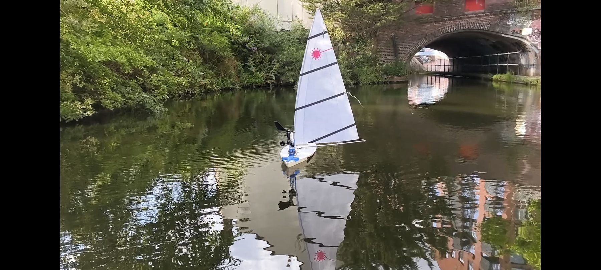
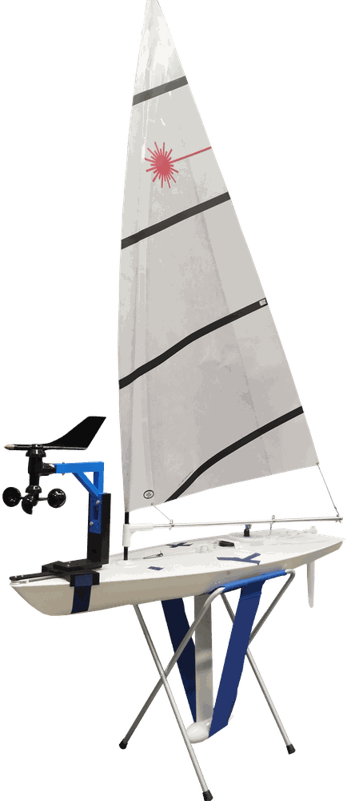
The boat and its electronics
The hull carries everything: the controller, a GPS module, a tilt-compensated compass, wind sensors on the mast, two servos for rudder and sail, a PWM servo shield, an RC receiver for manual override, and an SD card for logging.
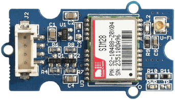
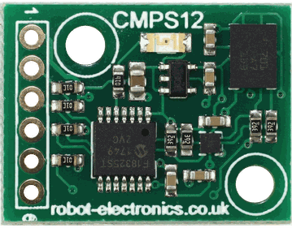
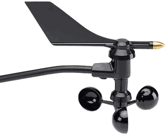
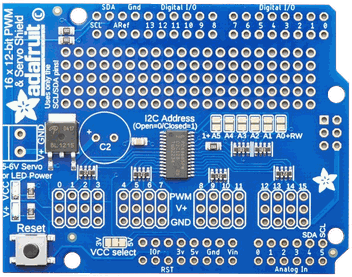
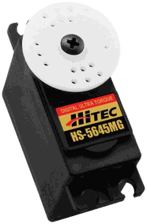
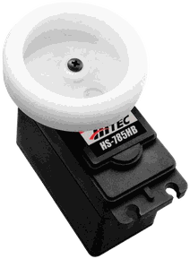
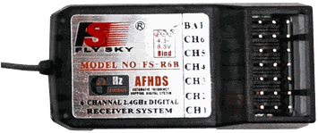
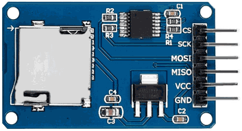
Boat and component images: Titouan Leost, Aston Autonomous Sailboat 2024
Where am I, where is the target?
A GPS module gives the boat's position, and a tilt-compensated CMPS12 compass gives its heading over serial. A wind vane reads wind direction, and an anemometer counts rotations through an interrupt to measure wind speed.
Every loop the boat computes the great-circle distance and the initial bearing to the waypoint, then the wind angle relative to its own heading.
Steer and trim in a closed loop
The rudder follows a proportional law: 1.5 × the heading error, wrapped to ±180° and limited to ±45°, so the boat turns firmly towards the waypoint without over-steering.
The sail is trimmed from the relative wind. It is pulled in tight when the wind comes from ahead and eased out to 90° once the wind is on the beam or behind. A PCA9685 PWM driver sets both servos, and the boat centres everything and stops once it is within 3 m of the waypoint.
Human override, always on
Interrupts on two receiver channels measure the RC pulse widths in the background. As soon as a valid signal appears (900–2200 µs on both channels), the boat hands rudder and sail straight to the person on the transmitter. When the signal disappears, it goes back to sailing itself. This made it safe to test on the water and to recover the boat at any time.
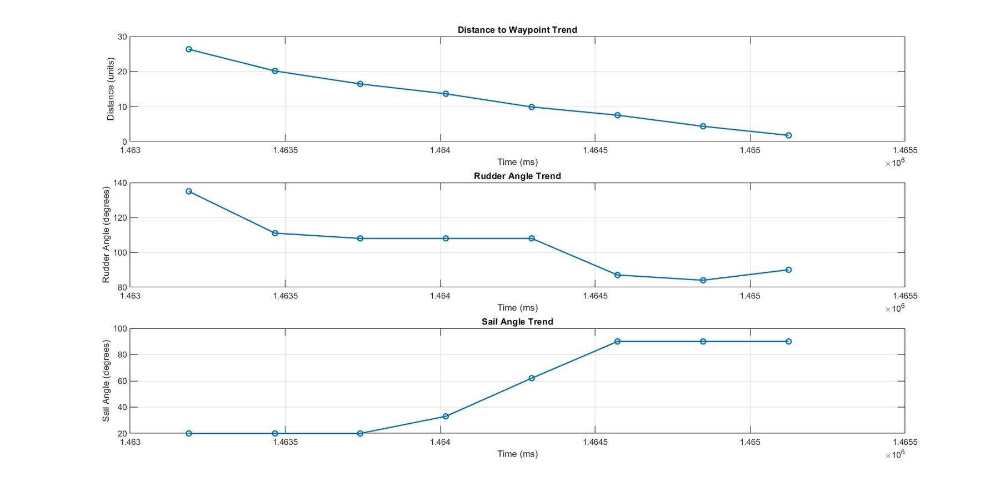
Dry tests, then real water
Each loop writes position, heading, bearing, distance, wind and both servo angles to the SD card. A dry-land test checked the sensors and actuator responses before the boat went near water.
On the water, the boat sailed live GPS missions while adjusting to the wind. The water-test logs hold more than 25,000 samples, which I plotted afterwards to see how distance, rudder and sail behaved on each run.
/stack